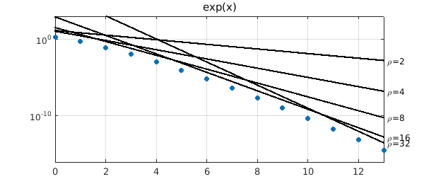
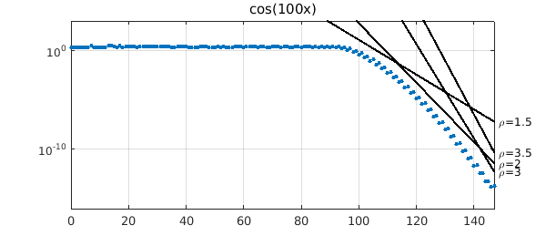

1. Introduction
If $f$ is an analytic function on $[-1,1]$, its Chebyshev interpolants $p_n$ converge at least geometrically as the degree $n$ increases, i.e., at the rate $O(\rho^{-n})$ for some $\rho>1$. If $f$ is entire, the convergence is faster than geometric, namely $O(\rho^{-n})$ for any $\rho>1$, though with worse constants in the big O as $\rho$ increases. Here we show how this works for two examples.
The mathematics originates with Sergey Bernstein around 1912 and is described in Chapter 8 of [1]. Specifically, if $f$ is analytic on $[-1,1]$, then it can be analytically continued to some neighborhood of $[-1,1]$ in the complex plane. The neighborhoods of special interest for polynomial approximations are Bernstein ellipses, i.e., regions bounded by ellipses with foci at $1$ and $-1$. The parameter $\rho$ for such an ellipse is the sum of its semimajor plus semiminor axis lengths, a number that approaches $\infty$ as the ellipse widens out to include the whole complex plane and approaches $1$ as it shrinks to the interval $[-1,1]$. Now suppose that $f$ is analytic and satisfies $|f(x)|\le M$ in the Bernstein $\rho$-ellipse for some numbers $\rho>1$ and $M$. According to Theorem 8.1 of [1], the Chebyshev coefficients of $f$ satisfy $$ |a_k| \le 2 M \rho^{-k}. $$ According to Theorem 8.3, the Chebyshev interpolants (i.e., polynomial interpolants in Chebyshev points of Chebfun's usual second kind) satisfy $$ \| f - p_n \|_\infty \le {4 M \rho^{-n}\over \rho - 1}. $$
2. The exponential function
Let us see this bound in action for the entire function $f(x) = e^x$. Any $\rho$ is allowed, but $M$ must grow with $\rho$. Since the rightmost point of the $\rho$-ellipse is the point $x = (\rho + \rho^{-1})/2$, we can take $$ M = \exp((\rho + \rho^{-1})/2). $$ Here are the Chebyshev coefficients of $f$ together with some straight lines above them corresponding to Bernstein bounds for $\rho = 2,4,8,16,32$.
ff = @(x) exp(x);
fexact = chebfun(ff); nmax = length(fexact)-2;
nvec = 0:nmax; errvec = [];
for n = nvec
fn = chebfun(ff,n+1);
err = norm(fn-fexact,inf); errvec = [errvec err];
end
semilogy(nvec,errvec,'.','markersize',18)
xlabel('degree n'), ylabel error, title('exp(x)'), hold on
for rho = [2 4 8 16 32]
M = exp((rho+1/rho)/2);
bound = 4*M*rho.^-nvec/(rho-1);
semilogy(nvec,bound,'-k')
text(1.01*nmax,bound(end),['\rho=' int2str(rho)])
end
axis([0 nmax 1e-16 1e3]), grid on, hold off

3. The function cos(100x)
Now we try another entire function whose convergence curve is more interesting, $f(x) = \cos(100x)$. Since the topmost point of the $\rho$-ellipse is $x = i (\rho - \rho^{-1})/2$, we can take $$ M = \cosh(100(\rho - \rho^{-1})/2). $$ Here are the Chebyshev coefficients of $f$ together with some lines corresponding to $\rho = 1.5, 2, 3, 3.5$.
ff = @(x) cos(100*x);
fexact = chebfun(ff); nmax = length(fexact)-2;
nvec = 0:nmax; errvec = [];
for n = nvec
fn = chebfun(ff,n+1);
err = norm(fn-fexact,inf); errvec = [errvec err];
end
semilogy(nvec,errvec,'.','markersize',12)
xlabel('degree n'), ylabel error, title('cos(100x)'), hold on
for rho = [1.5 2 3 3.5]
M = cosh(100*(rho-1/rho)/2);
bound = 4*M*rho.^-nvec/(rho-1);
semilogy(nvec,bound,'-k')
text(1.01*nmax,bound(end),['\rho=' num2str(rho)])
end
axis([0 nmax 1e-16 1e3]), grid on, hold off

4. Reference
- L.N. Trefethen, Approximation Theory and Approximation Practice, SIAM, 2013.